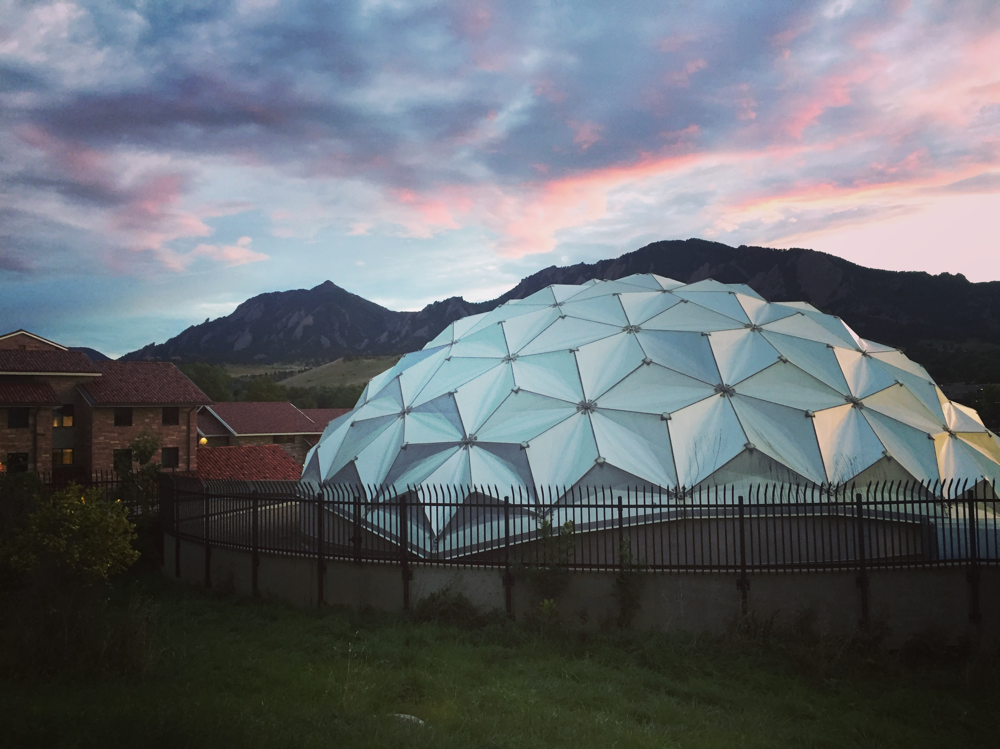

Research

I study transiting M dwarf exoplanets as a member of
Zach Berta-Thompson's
CU Boulder Exoplaneteers (CUBE) research group.
The Transiting Exoplanet
Survey Satellite (TESS)
is surveying the 200,000 brightest and nearest stars in our galaxy,
and I run a ground-based observing campaign to validate and characterize as many M
dwarf exoplanets as I can, focusing on small planets at long periods.
So far, I have contributed to the validation and characterization of LHS 3844b (Vanderspek+ 2019, the first M
dwarf planet found by TESS), the LP 791-18 system (Crossfield+ 2019), and TOIs 122b and 237b
(Waalkes+ 2021).

Selected Publications:
TOI 122b and TOI 237b, Two Small Warm Exoplanets Orbiting Inactive M Dwarfs Found by TESS
A Super-Earth and Sub-Neptune Transiting the Late-type M Dwarf LP 791-18
Lyα in the GJ 1132 System: Stellar Emission and Planetary Atmospheric Evolution
TESS Discovery of an Ultra-short-period Planet around the Nearby M Dwarf LHS 3844
The Transiting Exoplanet Community Early Release Science Program for JWST
Examining the exobase approximation: DSMC models of Titan's upper atmosphere
For a complete list of publications, go here
Teaching & Outreach

Teaching:
ASTR 3400: Astronomy Research Methods, Fall 2018
I was a TA and research mentor for this astronomy research methods course,
which involved helping students understand the underlying principles of exoplanet
science, and the research methods we use to study individual planets and
planet populations.
Outreach:
The Sommers-Bausch Observatory at CU Boulder regularly has public observing nights
which I, along with other members of my department, facilitate. My research advisor
and I also use the SBO telescopes for exoplanet science and to provide a research
experience to undergraduate students interested in exoplanets. As this program
gains traction, our undergraduate researchers will soon be contributing meaningful
results to the TESS followup effort.
Contact
Email: william.waalkes@colorado.edu
Office: Duane D241